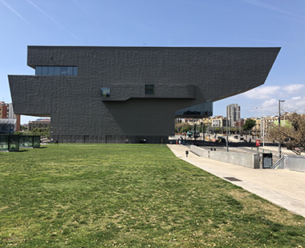
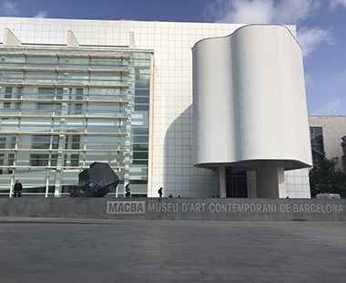
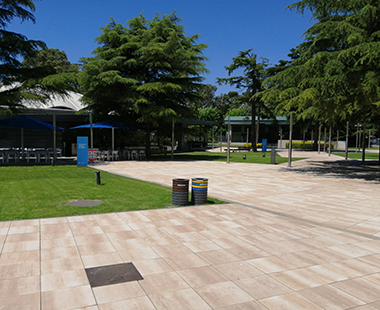

MUSEOS
MUSEU DEL DISENY

El Museu del Disseny de Barcelona és una museu creat al 2008 per l’institut de Cultura de Barcelona però inagurat al 2014.
En aquest museu ens podem trobar coleccions d’Arts Decoratives, Ceràmica, Tèxtil i d’Arts Gràfiques. Com arribar
MACBA

El Museu d’Art Conteporani de Barcelona va ser fundat al 1995 per l’arquitecte Richard Meier. És un museu que es dedica a l’exposició de l’art i a les pràctiques culturals conteporànies.
Fora del museu podem veure a molts skaters i molts esportistes, també el museo fa activitats de cant, ball, bàsicament activitats a l’aire lliure.
Com arribar
MUSEU DE LES AIGUES

El Museu de les Aigües ubicat a Cornellà de Llobregat va ser fundat al 2004 per la fundació Agbar, és un museu dedicat a l’aigua.
El Museu s’ha fet més conegut des de que es va obrir un nou projecte, que era que les escoles podien visitar el museu amb unes activitats organitzades pel museu.
Com arribar